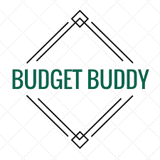
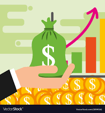

WHY BUDGETBUDDY?
Seamlessly manage your time & money with the most detailed money tracker EVER!
Track ALL your expenses - groceries, home bills, travel, medical bills, laundry, books, internet, e.t.c
An expense tracker is a tool that enables people to manage their finances by keeping tabs on their spending.
You can use an expense tracker as a tool to keep tabs on your everyday spending and outgoing money. You may better understand where your money is
going and see areas where your budget might
need to be adjusted by constantly keeping track of your costs. You may quickly track your spending habits, establish financial objectives, and make wise
financial decisions by using an expenses tracker. This application can be used for both personal and professional purposes, including controlling staff
costs and creating project budgets. The bottom line is that anyone who wants to take charge of their finances and make wise financial decisions should
use an expenses tracker.

